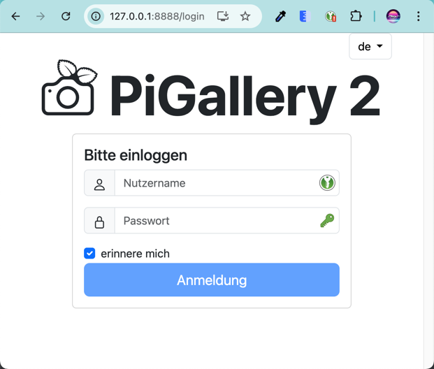
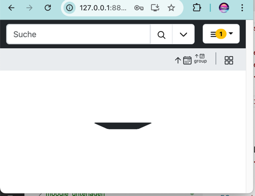
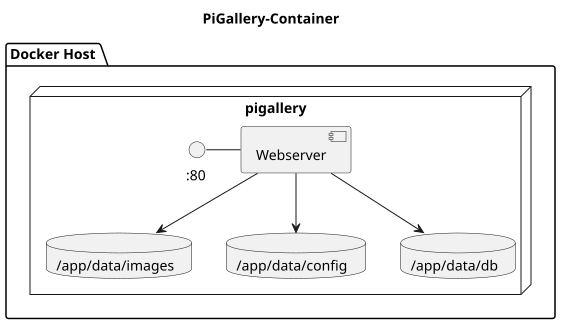
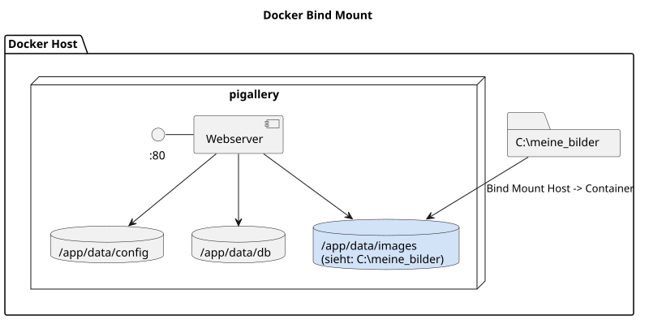
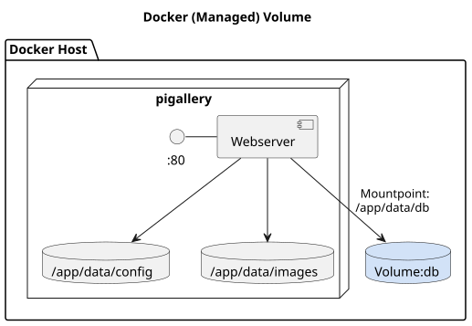
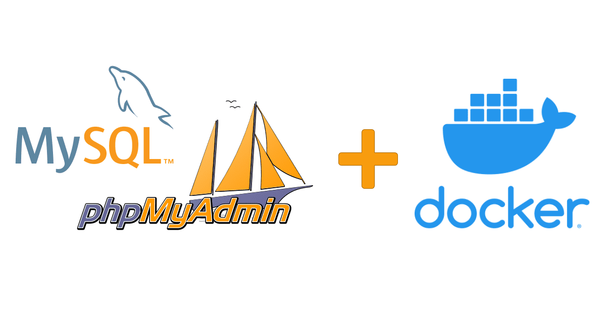

{% extends "../_base_template.html" %}
{% block title %}Lektion 6 - Persistenz{% endblock %}

{% block sections %}
<section data-markdown>
	<textarea data-template>
# <i class="fas fa-graduation-cap"></i> M347 - Daten-Persistenz, Mounts, Volumes

## Heutiges Ziel

- Sie kennen die Problematik von Daten, die den Lifecycle der Container überleben sollen
- Sie können externe Daten und Speicherplatz für Container bereitstellen
- Sie kennen den Unterschied zwischen Bound Volumes und Managed Volumes und wissen, wann Sie welchen Typ verwenden
- Sie wissen, wie Sie Managed Volumes mittels Hilfscontainer zugreifen / sichern können

</textarea>
</section>

<section data-markdown>
	<textarea data-template>
# <i class="fas fa-flask"></i> Experiment: PiGallery

Wir wollen unseren eigenen **Photo-Galerie-Dienst** bereitstellen. Das Schöne am Docker-Hub ist, dass es für fast jedes Problem eine Docker-Lösung gibt :-)

Ein solcher Dienst ist z.B. [**PiGallery**](https://bpatrik.github.io/pigallery2/).

Wir starten einfach mal einen Docker Container damit:

```sh
PS1> docker run --name pigallery -d -p 8888:80 bpatrik/pigallery2:latest
```

<div class="fragment d-flex gap-10 align-items-start">
	
	<div>

* Login mit "admin" / "admin"
* <i class="far fa-hand-point-right"></i> Cool! Schon haben wir unseren eigenen Bilder-Galerie-Dienst! **Oder??**

	</div>
</div>

</textarea>
</section>

<section data-markdown>
	<textarea data-template>
# <i class="fas fa-flask"></i> Experiment: PiGallery

Aktuell noch etwas enttäuschend:

<div class="d-flex gap-10 align-items-start">
	
<div>

* Wir sehen keine Bilder: der Container sucht Bilder in seinem lokalen Verzeichnis<br>`/app/data/images`.

* Wenn wir den Container löschen / neu erstellen, sind auch alle unsere Einstellungen weg!<br>
  (`docker stop pigallery, docker rm pigallery, docker run .....`)<br>
  Container sind "Wegwerfware", wir müssen damit rechnen, dass dieser mal neu gebaut wird.
</div>
</div>


<div class="fragment d-flex gap-10 align-items-start">
<div>

Laut [Dokumentation](https://github.com/bpatrik/pigallery2/blob/master/docker/README.md) liest/speichert der Container Daten von verschiedenen Orten:<br>

</div>
<div>

Nur sind diese Verzeichnisse alle lokal im Container drin:<br>
**<i class="far fa-hand-point-right"></i> Irgendwie müssen wir also dem Container folgendes konfigurieren können:**

* Wir möchten Bilder von unserem PC darstellen können
* Wir möchten, dass unsere Einstellungen erhalten bleiben, auch wenn wir den Container löschen / neu bauen

<i class="far fa-hand-point-right"></i> Dazu dienen uns "Mounts", wir schauen uns kurz die Theorie dazu an.
</div>
</div>


</textarea>
</section>

<section data-markdown>
<textarea data-template>
# <i class="fas fa-graduation-cap"></i> Docker Mounts / Volumes - Persistente Daten

Container kennen das Konzept von **Volume Mounts**: Dies sind externe Daten, welche an einen Ort im **Container-Verzeichnisbaum** eingebunden werden können

Dabei werden zwei verschiedene Techniken unterschieden:

<div class="d-flex align-items-start gap-10">
	<div class="fragment border-1 flex-grow-1 flex-basis-0">

**[Bind Mounts](https://docs.docker.com/engine/storage/bind-mounts/)**

* externe Verzeichnisse, welche mit dem Container "verbunden" werden können
* Verwendung:
  * zum **Teilen von Quellcode / Build-Artefakte** während der Entwicklung einer Applikation
  * **zum Teilen / Speichern von Daten, welche auf dem lokalen Host liegen**
  * zum Teilen von Konfigurationsdateien mit dem Host
* vielmals langsamer als Volumes, da Konvertierung zwischendrin stattfindet
</div>

	<div class="fragment border-1 flex-grow-1 flex-basis-0">

**[Volumes](https://docs.docker.com/engine/storage/volumes/)**

* von Docker erstellter und verwalteter Speicherplatz
* Verwendung:
  * wenn **kein Zugriff vom Host** auf die Daten erfolgen muss
  * wenn Zugriff auf dieselben Daten für mehrere Container erfolgen soll
  * für Einsatz anderer Storage-Mechanismen (z.B. Amazon S3-Speicher)
  * für einfacheres Handling (Backup, Migration an andere Container)
  * keine gute Wahl, wenn die Daten auch auf dem Host bearbeitet werden müssen
  * einzige Wahl bei Cloud-Diensten (da gibts keine "lokalen" Hosts)
* Vielmals schneller / effizienter als Bind Mounts (natives Docker-Filesystem)
	</div>
</div>

</textarea>
</section>

<section data-markdown>
<textarea data-template>
# <i class="fas fa-graduation-cap"></i> Docker Bind Mount

Ein **Bind Mount** "reicht" ein lokales Verzeichnis, ein lokales File, in den Container hinein:



Wir definieren den Bind Mount beim Erstellen des Containers mit `-v [lokaler Pfad]:[container-Pfad]`:

```sh
# Syntax: 
PS1> docker run [.....] -v LokalerPfad:ContainerPfad [.....]

# Beispiel:
docker run [.....] -v C:/meine_bilder:/app/data/images bpatrik/pigallery2:latest
```

Im Beispiel PiGallery sinnvoll für das "Hereinreichen" von lokal gespeicherten Fotos.
</textarea>
</section>

<section data-markdown>
<textarea data-template>
# <i class="fas fa-graduation-cap"></i> Docker (Managed) Volume

Die zweite Möglichkeit für Persistierung ist die Erstellung eines **Docker (Managed) Volume**: Dabei erstellt Docker (irgendwo) einen persistenten Speicherplatz,
welchen der Container zur Speicherung von Daten nutzen kann. Sie als Anwender haben darauf keinen direkten Zugriff und wissen auch nicht, wo dieser liegt.



Wir können ein Volume in Docker erzeugen mittels `docker volume`:

```sh
PS1> docker volume create [name des Volumes]
# bsp:
PS1> docker volume create pigallery-db
```

Wir mounten das Volume beim Erstellen des Containers mit `-v [Volume-Name]:[container-Pfad]`: Das Volume wird von Docker als permanenter Speicher erstellt:

```sh
# Syntax: 
PS1> docker run [.....] -v VolumeName:ContainerPfad [.....]

# Beispiel:
docker run [.....] -v pigallery-db:/app/data/db bpatrik/pigallery2:latest
```

Im Beispiel PiGallery sinnvoll für die intern aufgebaute Datenbank: Die interessiert uns "von aussen" soweit nicht, der Container verwaltet darin seine Indexe.

</textarea>
</section>

<section data-markdown>
<textarea data-template>
# <i class="fas fa-flask"></i> Pi-Gallery mit Persistenz

Mit diesem Wissen können wir nun den Pi-Gallery-Container anders bauen.<br>
Wir wissen aufgrund der [Dokumentation](https://github.com/bpatrik/pigallery2/blob/master/docker/README.md), dass 4 Container-Pfade für Daten genutzt werden:

* Konfiguration: `/app/data/config` 
* Datenbank: `/app/data/db` 
* Fotos: `/app/data/images` 
* Temporäre Dateien: `/app/data/tmp`

Tragen wir zusammen: **Welche Folder würden Sie mit welcher Persistierungs-Methode abdecken, und warum?**

<div class="fragment">

Mein Vorschlag:

* Konfiguration: als Managed Volume: vorerst wollen wir selber keinen Zugriff auf die Konfiguration
* Datenbank: als Managed Volume: diese wird vom Container genutzt, ist für uns aber nicht interessant
* Fotos: Bind Mount: Wir wollen unsere lokal gespeicherten Fotos hineinreichen
* Temporäre Dateien: nicht persistieren: Diese werden nicht persistent benötigt (sie heissen ja "temporär")
</div>

<div class="fragment">

Also bauen wir uns dies:

```sh
# Estellen der Manage Volumes:
docker volume create pigallery-config
docker volume create pigallery-db

# Neu-Erstellen des Containers:
# Achtung, Zeilenumbruch in Powershell mit "`", in Linux-Shell ersetzen mit "\"
docker stop pigallery && docker rm pigallery
docker run --name pigallery -d `                
	-p 8888:80 `
	-v pigallery-config:/app/data/config `
	-v pigallery-db:/app/data/db `
	-v /Pfad/Zu/Ihren/Fotos:/app/data/images `
	bpatrik/pigallery2:latest
```
</div>


</textarea>
</section>

<section data-markdown>
<textarea data-template>
# <i class="fas fa-flask"></i> Übung: Mysql + PhpMyAdmin

Nun kombinieren Sie Ihr Wissen: Sie bauen einen Dienst auf, und wenden Ihr erstandenes Wissen an:

Sie bauen einen sehr gängigen Dienst auf: 

MySQL-Server mit einer zugehörige Admin-Oberfläche mit PhpMyAdmin. Dann importieren Sie eine Demo-DB darin.


<div>

</div>

**Ziel:**

* Erstellen der notwendigen Container
* Erstellen der notwendigen Netzwerken und Verbinden der Container
* Erstellen der notwendigen persistenten Volume-Techniken
* Dokumentation mittels PlantUML der Komponenten / Architektur

Sie finden die detaillierte Aufgabenstellung als **Moodle-Übung**

(TODO: Moodle-Übung MySQL-Server mit PhpMyAdmin erstellen!)

</textarea>
</section>
{% endblock %}